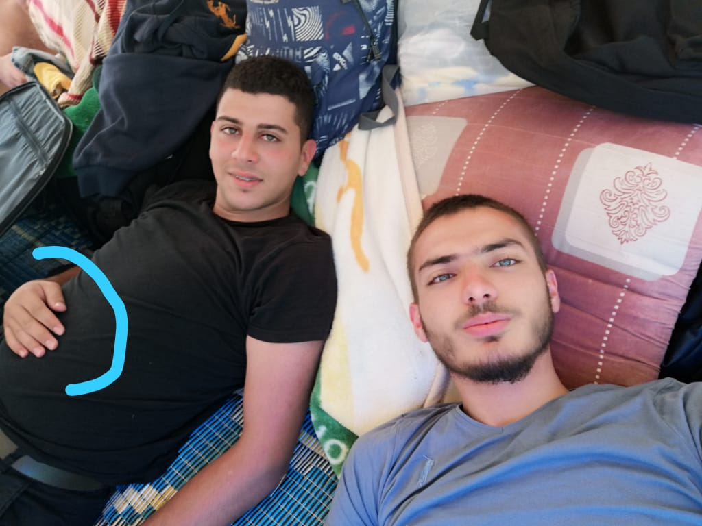
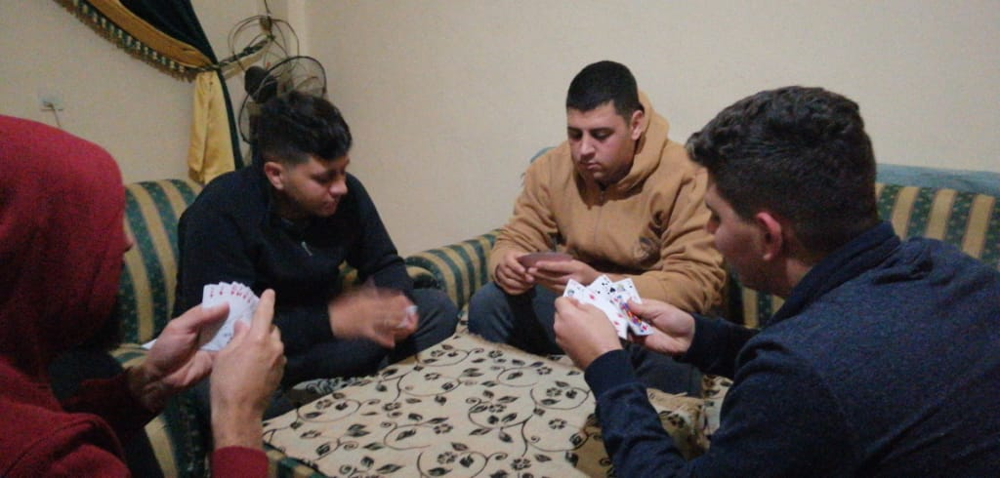

الحمير اشكال واحجام وتتميز بألوانها والملابس التي ترتديها

تتزاوج الحمير مرتين الى ثلاث مرات في السنة وعندما يحين التزاوج يتم في اي مكان في الخيم او الحظائر او اي مكان آخر
(صورة للانثى معشرة(حامل
يمكنك روئية المزيد من هنا
يمكن للحمير ايضا ان تلعب الورق مع بعضها وايضا يمكن لأي شخص اللعب معها لأنها حيوانات ودية تحب التجمع والاختلاط
